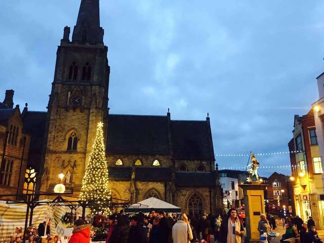

Christmas Markets in Durham

Christmas markets in Durham sell everything from cosy christmas jumpers to hot chocolate. Make sure you head down to the Palace Green and Market Square to get christmas gifts for your friends and family!
List of Markets
- Craft and Gift Marquee on Palace Green
- Regional Food Producer's Market
- Durham Market Hall
- Festive Outdoor Markets